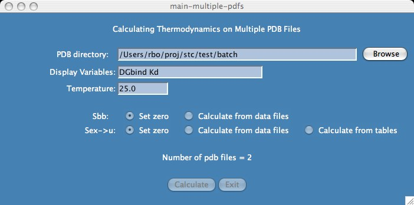
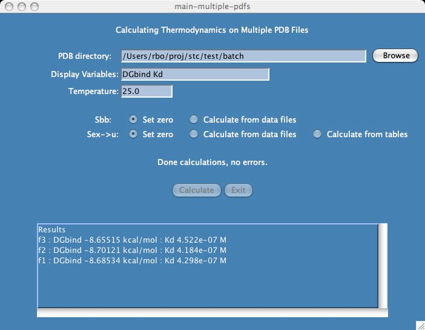

First you want to place all of your pdb files in one directory as shown in the lib/examples/batch. In this example, the pdb files are made up of a ligand and an enzyme separated by a TER statement. When you are ready, cd to that directory, type "stc" and press the "Batch" button.

Currently there are not alot of options, the most interesting being that you can choose which variables you want to display as the results are being calculated. Your choice of variables come from the typical basic output file .

Each pdb file is processed in alphabetic order, first ASA output files are generated and thermodynamic calculations done with detailed results.
A one-line summary of the thermodynamic results is placed in the stc.batch results file and it is the user's responsibility to sort the file if need be.
Previous versions of stc included a batch script which users could modify if you want to bypass the stc graphics window. This should still be valid but it does take work to understand how to set it up. An example dataset for which you can try this script is found in lib/examples/batch2 .
This file last updated: Questions to: bionmr@biochem.ualberta.ca